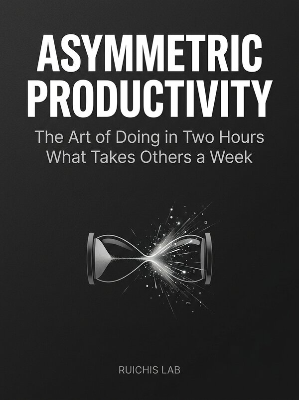

Productividad Asimétrica • Inglés • Kindle eBook & Paperback (5" × 8")
Asymmetric Productivity
The Art of Doing in Two Hours What Takes Others a Week

Sinopsis
The English edition of Ruichis Lab's manifesto on cognitive leverage. Discover how high-output engineers, writers, and creators replace linear grind with asymmetric execution systems, cognitive isolation protocols, and autonomous workflows.
Qué incluye esta edición
- Full English edition crafted for global professionals, builders, and independent creators.
- Includes the 2-Hour Deep Execution Protocol and Asymmetric Leverage Matrix.
- Available worldwide in Kindle eBook and 5" × 8" Paperback (ASIN: B0HJ42QFCV).
Excerpt — The Asymmetric Leverage Principle
«In knowledge work, output is never proportional to hours logged. Two hours of uninterrupted architectural clarity—amplified by the right cognitive tools—routinely outperforms forty hours of fragmented, reactive busywork.»
Otros libros de Ruichis Lab
- Productividad Asimétrica — El arte de hacer en dos horas lo que a otros les lleva una semana
- 100 Grandes Sopas de Letras de Cultura General — Colección Letras y Retos (Vol. I) • Historia • Ciencia • Arte • Geografía • Filosofía
- 100 Grandes Sopas de Letras de Biología — Colección Letras y Retos (Vol. II) • Célula • Genética • Botánica • Zoología • Evolución